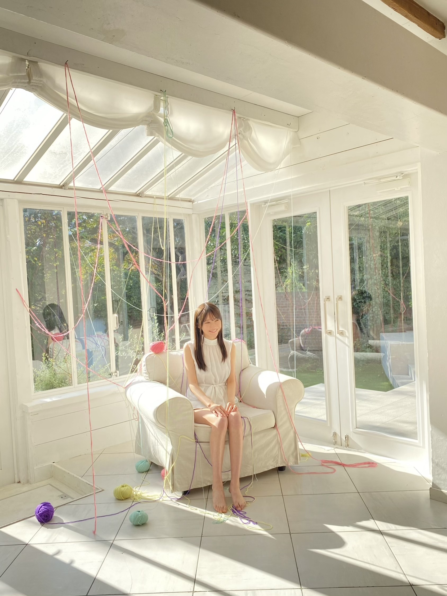

2020/1208Tue影ナレとOVERTURE。黒見明香(16)
「新4期生の "新" 取ってもいいんじゃないかな？」
ライブ後にふと、そんな言葉を頂きました。。。
もちろん、まだまだ
足りていない事、出来ない事ばかりを
痛感して申し訳なく、反省をくり返す日々です...
けれども、励ましでも、そんな言葉を
かけて貰えたこと。。
じわーっとまた涙が込み上がってきて
忘れられない記念日になりました。
＊
寒いね〜！今日も一日お疲れ様でした✩︎⡱
ココを見つけてくださり ありがとうございます♪
乃木坂46 ４期生の黒見明香です。
すこーしだけ自己紹介させてください☺︎
♪:*:･･:*:･･:*:･･:*:･･:*:･･:*:･♪:*:･･:*:･･:*:･･:*:･･:*:･･:*:･♪
黒見 明香（くろみ はるか）
2004年1月19日生まれ 16才
香港生まれ・東京都出身です
あだ名： くろみん・黒見ちゃん
3の倍数9・6・3(くろみ)
と覚えてもらえたら嬉しいです♪
♪:*:･･:*:･･:*:･･:*:･･:*:･･:*:･♪:*:･･:*:･･:*:･･:*:･･:*:･･:*:･♪

-:-:୨୧:-:- 大好きで大切な16人のかけがえのない仲間です✨（公式の写真とちょっぴり違うんだよ〜探してみてね☺︎笑）
【 乃木坂46 4期生ライブ2020✨ 】
先輩方が不安でいっぱいの本番を見守っててくださってて、
ライブ後に、あたたかなお言葉を掛けてくださった事も
『自主練』を呼びかけて場所を取っててくれたり、
励まし、たくさん教えてくれました。

-:-:୨୧:-:- 足りない所ばかりでアイドルらしくない私ですが、せいいっぱい坂を登りたいです。
誰かのことを一生けんめい『応援したいっ！』って本気で思ったら
たとえどこにいても、どんな形でも、
それは"アイドル"なのかもしれない。。。と思いました。
＊
そして、わたし達が
「少しでも元気になってほしい！」「笑顔になってほしい」
一番応援したい！と思って、日々心の一番近いところに居る
乃木坂と一緒に歩んでくださっている大切な皆さんが、
"私たちのアイドル"です (*ˊᵕˋ*)੭✨
あなたがいるからこそ！
頑張れるんだな、と毎日実感しています。
★前回『ここだけの秘密だよ！』笑 で

「お嬢様ぽい！？」
初対面の方に、どうしたら、せめて少しでも乃木坂らしく、お姉さんらしくなるだろうと悩んだ結果の・・・
精一杯の、背伸びで、なんだか恥ずかしいです\(//∇//)\笑
＊
先日、靴を脱いで、"たたみの楽屋"で
引き続き・・・
読んでくださり、本当にありがとうございます☺︎
次回も、会えたら嬉しいなぁ✨
またねヾ(･ω･*)
くろみはるか☺︎
☆ 明日のあなたのラッキーナンバー：❻ と ❶
♪:*:･･:*:･･:*:･･:*:･･:*:･･:*:･♪:*:･･:*:･･:*:･･:*:･･:*:･･:*:･♪
・
・
・
＜ちょこっとアンコール♬笑＞
〜クロミ・ル・フィーユ〜
（クロ見るFeel YOU☺︎）
＜ゲームコーナー✨＞
⚫︎ くろみんは、プロスピ交換会どうだったー？
そして、お誕生日を迎えるあなたへ・・
✨HAPPY BIRTHDAY✨
どうぞ素敵な一年になりますよう✩︎⡱
♪:*:･･:*:･･:*:･･:*:･･:*:･･:*:･♪:*:･･:*:･･:*:･･:*:･･:*:･･:*:･♪
ここまで読んでくださったアナタ、ほんとうにありがとう♡
またねヾ(･ω･*)
ライブ後にふと、そんな言葉を頂きました。。。
もちろん、まだまだ
足りていない事、出来ない事ばかりを
痛感して申し訳なく、反省をくり返す日々です...
けれども、励ましでも、そんな言葉を
かけて貰えたこと。。
じわーっとまた涙が込み上がってきて
忘れられない記念日になりました。
＊
寒いね〜！今日も一日お疲れ様でした✩︎⡱
ココを見つけてくださり ありがとうございます♪
乃木坂46 ４期生の黒見明香です。
すこーしだけ自己紹介させてください☺︎
♪:*:･･:*:･･:*:･･:*:･･:*:･･:*:･♪:*:･･:*:･･:*:･･:*:･･:*:･･:*:･♪
黒見 明香（くろみ はるか）
2004年1月19日生まれ 16才
香港生まれ・東京都出身です
あだ名： くろみん・黒見ちゃん
3の倍数9・6・3(くろみ)
と覚えてもらえたら嬉しいです♪
♪:*:･･:*:･･:*:･･:*:･･:*:･･:*:･♪:*:･･:*:･･:*:･･:*:･･:*:･･:*:･♪
-:-:୨୧:-:- 大好きで大切な16人のかけがえのない仲間です✨（公式の写真とちょっぴり違うんだよ〜探してみてね☺︎笑）
【 乃木坂46 4期生ライブ2020✨ 】
リレーブログ『４6回目』のブログは、
4期生ライブの事からお伝えさせてくださいね♬
まさかのライブ直前に、
寺田蘭世さん♡がブログに
応援メッセージを書いてくださったり、
先輩方が不安でいっぱいの本番を見守っててくださってて、
ライブ後に、あたたかなお言葉を掛けてくださった事も
画面の向こう側からも、
乃木坂を一緒に登って下さっている皆さんが
拙い未熟なパフォーマンスにも
たくさんコメントで応援してくださった事も
胸がいっぱいで、感激で、
込み上げてくる想いを抑えることが出来ませんでした。
本当にありがとうございます。
＊
乃木坂は愛に溢れてるんだな...と
またあらためて、皆んなに教えて貰ったように
感じています。
一緒に居てくださり、本当にありがとうございます(*´-`)
♬ *。♩*。♬
ありがたくも『影ナレ』を
掛橋沙耶香ちゃん♡ 松尾美佑ちゃん♡ と一緒に
担当させて頂きました。
影ナレが始まって、OVERTUREが流れ出すと、、、
「ああ、ついに待っていた時間が始まるんだ〜!!」
と胸が高まる瞬間ですよね (*ˊᵕˋ*)੭ ✨
皆さんの「わーーーっ」という歓声と、
色とりどりのサイリウムが見えました！！
＊
リハーサル期間は、限られた練習時間を生かすために、
たくさんの経験を積んで、
4期生を育てて、いつも教えてくれる、
大好きな、11人の 憧れのお姉さんたちが、
4期生を育てて、いつも教えてくれる、
大好きな、11人の 憧れのお姉さんたちが、
『自主練』を呼びかけて場所を取っててくれたり、
アドバイスやお話をしてくれたり、
みんなで会議室に集合して映像確認したりと、
励まし、たくさん教えてくれました。
みんなのおかげで、ステージに立たせて頂いたこと、
本当に感謝しています(*´-`)
＊
⚫︎"走れ!Bicycle"でいつも顔を見合わせて笑ったり、ふざけてくれる優しいさくちゃん
＊
⚫︎"走れ!Bicycle"でいつも顔を見合わせて笑ったり、ふざけてくれる優しいさくちゃん
⚫︎「大変だったよね、大丈夫だよ！」と、心に寄り添ってくれる温かいかっきー
⚫︎近くのポジションでいつも声掛けてくれて、安心感をくれるさぁちゃん
⚫︎カッコいいダンスをたくさん教えてくれて、抱きついてくれるやんちゃん
⚫︎可愛いエピソードで落ち着かせて、心を癒してくれるゆりちゃん
⚫︎不安な顔をしていると、いつも自分から声を掛けてくれるりかちゃん
⚫︎真っ直ぐな瞳で褒めてくれたり、励まして大きなパワーをくれるゆなちゃん
⚫︎ダンスのコツを教えてくれて、頑張ろうって声掛けてくれるキラキラレイちゃん
⚫︎みんなをよく見ていてくれて、ふざけて触り合いっこしてリラックスさせてくれるまゆちゃん
⚫︎ステージ裏でもいつも可愛い笑顔で返してくれて、いたずらしてくれる優しいあやめん
⚫︎話し辛い悩み事もたくさんお話して考えてくれて、率先して引っ張ってくれるせいらちゃん
⚫︎「大丈夫？」と度々聞いてくれて、緊張しながらもソロを歌いきった度胸ある林ちゃん
⚫︎いつも笑顔で話しかけてくれて、タンブリングもカッコ良すぎるみゆちゃん
⚫︎うんうんって相談にのってくれて、あたたかなアドバイスをくれる心優しいみっちゃん
⚫︎皆さんへの感謝の気持ち、4期生への想いがいっぱいになって涙してしまった私を(本当にごめんなさい)あたたか支えて、励ましてくれてるなおちゃん
＊
こんなかけがえのない素敵なメンバーとともに歩ませて頂けること...
心から感謝しています。みんな、いつもありがとう((〃ω〃))
♪:*:･･:*:･･:*:･･:*:･･:*:･･:*:･♪:*:･･:*:･･:*:･･:*:･･:*:･･:*:･♪
-:-:୨୧:-:- 足りない所ばかりでアイドルらしくない私ですが、せいいっぱい坂を登りたいです。
「乃木坂46の...」と口にしていいのだろうか...
円陣なんか参加させて頂いていいのだろうか...
畏れ多い...><
アイドルってなんだろう・・・
少しでも乃木坂を、4期生を、目指せるように、
円陣なんか参加させて頂いていいのだろうか...
畏れ多い...><
アイドルってなんだろう・・・
少しでも乃木坂を、4期生を、目指せるように、
どうやって頑張ったらいいのだろう・・・
たくさん考えました。
たくさん考えました。
リハーサルを重ねて、憧れの先輩方の映像を何度も見返して、
4期生の仲間に、たくさん教えて貰っていく中で・・・
誰かのことを一生けんめい『応援したいっ！』って本気で思ったら
たとえどこにいても、どんな形でも、
それは"アイドル"なのかもしれない。。。と思いました。
＊
そして、わたし達が
「少しでも元気になってほしい！」「笑顔になってほしい」
一番応援したい！と思って、日々心の一番近いところに居る
乃木坂と一緒に歩んでくださっている大切な皆さんが、
"私たちのアイドル"です (*ˊᵕˋ*)੭✨
あなたがいるからこそ！
頑張れるんだな、と毎日実感しています。
いつも本当にありがとうございます。
また明日からも、これからも、
一緒に歩んで行けたら嬉しいです(*´-`)
【 Out of the blue 】
ライブのアンコールで披露させていただきましたー！
2021年1月27日（水）発売される
乃木坂46 26thシングル「僕は僕を好きになる」に収録される
4期生楽曲「Out of the blue 」
16人で初めての楽曲です。センターは早川聖来ちゃん♡
とても楽しくて、クセになっちゃう素敵な楽曲です！
どうぞ、楽しみにしててくださいね (*ˊᵕˋ*)੭✨
★前回『ここだけの秘密だよ！』笑 で
リクエストいただいたライブでの公約・・・
『Wピース』
見つけてもらえたかなぁ・・・？
走れ！Bicycle！のイントロ部分でカメラを覗き込むところと
Threefold choiceの、巨大モニターに映った
「トナカイくろみ」がWピースをしていました〜\(//∇//)\笑
むずかしかったかなぁ...？ごめんね！
ライブ前の気持ちを書いたブログはココだよ〜☺︎↓
♪:*:･･:*:･･:*:･･:*:･･:*:･･:*:･♪:*:･･:*:･･:*:･･:*:･･:*:･･:*:･♪

-:-:୨୧:-:- マネージャさんが撮ってくださった ヤングマガジンさんのオフショットの一枚です✩︎⡱ 朝陽の差し込むテラスで糸を使っていろんなポーズを撮っていただきました☺︎
【 週刊ヤングマガジンNo.2・3号
乃木坂46スペシャルグラビアジャック 】
ただ今発売中の、週刊ヤングマガジンさまに、
表紙＆巻頭グラビアに 齋藤飛鳥さん♡
センターグラビアに 寺田蘭世さん♡ 佐藤楓さん♡ 金川紗耶ちゃん♡
と共に、
巻末センターグラビアとして、
新4期生の５名掲載していただきましたー！
＊
初めてのヤングマガジンさん、
ドキドキ緊張していると・・・
「好きな音楽かけてあげるよー！何が良い？」
と聞いてくださいました。
色々考えた結果....
やっぱり一番テンションが上がる
乃木坂メドレーをお願いしてしまいました((〃ω〃))笑
飛鳥さん、蘭世さん、楓さん、紗耶ちゃんすごくカッコ良くて美しいです✨
よかったら、是非みてくださいね♬
♪:*:･･:*:･･:*:･･:*:･･:*:･･:*:･♪:*:･･:*:･･:*:･･:*:･･:*:･･:*:･♪
-:-:୨୧:-:- 神宮球場やライブ会場をイメージしてユニフォームぽいデザインにしてみたよ〜☺︎よかったらぜひ着て貰えたらとっても嬉しいな〜((〃ω〃))✨
【 2021年１月生誕記念グッズまもなく締切だよー！ 】
生田絵梨花さん♡ 梅澤美波さん♡ 新内眞衣さん♡ 田村真佑ちゃん♡ 樋口日奈さん♡ 松尾美佑ちゃん♡ ちゃんと共に、
Tシャツの他にも、タオル＆缶バッジセット、トートバッグ、ミニサイズの生誕記念Tシャツ型のアクリルキーホルダーなど、色々と作ってくださいました(*´-`)✨
今夜23：00まで！
1月に推しメンバーのいる方、どうぞお忘れなくですよー！
楽しんでもらえたら嬉しいな〜♪
♬ *。♩*。♬
【 文化放送「レコメン!」 乃木坂 4 期生・メガ盛り祭り✨ 】
昨晩、文化放送「レコメン！」
初出演させていただきましたー！
聴いてくださった5軍リスナーの皆さま！？
本当にありがとうございます☺︎
声もとっても可愛いさぁちゃん♡
白ニット姿もすごく似合ってるりかちゃん♡
と一緒に、たくさんおしゃべりさせていただきましたヾ(･ω･*)o
＊
「同じ服を2着もっている」
エピソードが出ていましたが笑
先輩方が大切に築いて来てくださった場所へ、
先輩方が大切に築いて来てくださった場所へ、
初めてお邪魔させて頂く時に...
初対面の方に、どうしたら、せめて少しでも乃木坂らしく、お姉さんらしくなるだろうと悩んだ結果の・・・
精一杯の、背伸びで、なんだか恥ずかしいです\(//∇//)\笑
＊
先日、靴を脱いで、"たたみの楽屋"で
正座で待機していた時のこと。
マネージャーさんに
「くろみ、靴下穴空いてるよ・・？」
と指摘され・・・
びっくりして、みんなで転げながら大笑いして、
すごーく恥ずかしかったです。。。
（そんなわたしには、
ライブ前に"少し早いクリスマスプレゼント"として
スタッフさん達がクリスマス柄の新しい靴下を
プレゼントして下さいました((〃ω〃))笑）
マネージャーさんに
「くろみ、靴下穴空いてるよ・・？」
と指摘され・・・
びっくりして、みんなで転げながら大笑いして、
すごーく恥ずかしかったです。。。
（そんなわたしには、
ライブ前に"少し早いクリスマスプレゼント"として
スタッフさん達がクリスマス柄の新しい靴下を
プレゼントして下さいました((〃ω〃))笑）
（恒例のブログ最初の "黒見の黒歴史"コーナー
ここに出てきちゃってたよ〜）
引き続き・・・
＜今週 23:00〜＞
12月8日 筒井あやめ、林瑠奈、矢久保美緒
12月9日 柴田柚菜、清宮レイ、松尾美佑
＜来週 22:00〜＞
12月14日 賀喜遥香、北川悠理
12月15日 遠藤さくら、早川聖来
12月16日 田村真佑、金川紗耶、弓木奈於
のメンバーで出演させて頂きます！（ちゃん略です☺︎）
是非楽しみにしててくださいねヾ(･ω･*)o
♬ *。♩*。♬
【 乃木坂46 アンダーライブ 2020✩︎⡱ 】
続いては！！盛り上がること間違いなしの、
胸が熱くなる「アンダーライブ2020」
日本武道館にて開催です！
ライブ配信もされるので、是非是非楽しんでくださいね！
① 12月18日(金) 開場 16:30 ／ 開演 18:00 《ライブ配信予定》
② 12月19日(土) 開場 16:30 ／ 開演 18:00 《ライブ配信予定》
③ 12月20日(日) 開場 16:30 ／ 開演 18:00 《ライブ配信予定》
もちろん、わたしも観ますよー!!
是非、熱いアンダーライブも一緒に盛り上がりましょうね〜 (*ˊᵕˋ*)੭
♪:*:･･:*:･･:*:･･:*:･･:*:･･:*:･♪:*:･･:*:･･:*:･･:*:･･:*:･･:*:･♪
ブログやお手紙で、たくさんのコメントや感想送って下さり
本当にありがとうございます✩︎⡱
今回、ライブ見て初コメントだよー！というあなたも、
いつも近況を教えてくださるあなたも、
大切な時間を使ってお話しして下さり
本当にありがとうございます✨
あなたに出逢えた奇跡に、感謝しながら、
大事に、一つずつ全部読ませて頂いています((〃ω〃))
皆さんのことを知ることが出来る、
私の１日の中で『１番幸せな時間』です♩
いよいよ１月から！初めての個別トーク会で、
ブログやお手紙で、たくさんのコメントや感想送って下さり
本当にありがとうございます✩︎⡱
今回、ライブ見て初コメントだよー！というあなたも、
いつも近況を教えてくださるあなたも、
大切な時間を使ってお話しして下さり
本当にありがとうございます✨
あなたに出逢えた奇跡に、感謝しながら、
大事に、一つずつ全部読ませて頂いています((〃ω〃))
皆さんのことを知ることが出来る、
私の１日の中で『１番幸せな時間』です♩
いよいよ１月から！初めての個別トーク会で、
直接お話しできる時が、 今からとっても待ち遠しいです✩︎⡱
＊
いよいよ年末が近付いてきて、仕事や勉強が忙しかったり、
なんだか体調イマイチだよー、疲れちゃったよーって方も
本当に、お疲れ様でした✩︎⡱
きっと心も、身体も、しんどい時もあるかと思います。。
どうぞ、皆さんが 少しでも
ひとときリラックスできますように...✩︎⡱
と願っています(*´-`)
初めて会える日を、楽しみに待っています♪
＊
明日は、よく写真を撮ってくれる優しいお姉さん、
＊
いよいよ年末が近付いてきて、仕事や勉強が忙しかったり、
なんだか体調イマイチだよー、疲れちゃったよーって方も
本当に、お疲れ様でした✩︎⡱
きっと心も、身体も、しんどい時もあるかと思います。。
どうぞ、皆さんが 少しでも
ひとときリラックスできますように...✩︎⡱
と願っています(*´-`)
初めて会える日を、楽しみに待っています♪
＊
明日は、よく写真を撮ってくれる優しいお姉さん、
璃果ちゃんですよ〜♬
読んでくださり、本当にありがとうございます☺︎
次回も、会えたら嬉しいなぁ✨
またねヾ(･ω･*)
くろみはるか☺︎
☆ 明日のあなたのラッキーナンバー：❻ と ❶
♪:*:･･:*:･･:*:･･:*:･･:*:･･:*:･♪:*:･･:*:･･:*:･･:*:･･:*:･･:*:･♪
・
・
・
＜ちょこっとアンコール♬笑＞
〜クロミ・ル・フィーユ〜
（クロ見るFeel YOU☺︎）
「オンラインミート＆グリート」申し込んだよー！というお話も
（本当にありがとう！今から皆んなと初めてお話しできる日が嬉しくて、ワクワクしてるよ〜(*´-`)）
オススメの音楽も、楽しいエピソードも、お仕事や勉強頑張ってるよー！ていうお話も、生誕T買ったよーてコメントも(嬉しすぎる〜><)本当にありがとうございます！
そして、、4期生ライブ見たよ！ていう感想も、
たくさん、たくさん、皆んなの大事な時間を使って伝えてくれて
書いてくれて、本当にありがとうー!!
嬉しすぎて読んでるうちに涙しちゃって、
感情がぐちゃぐちゃになっちゃって、
本編も含めて、とーーっても長くなっちゃったので、
次回、いつものコメントお返し載せさせてください (*ˊᵕˋ*)੭ ✨
＊
一つ一つ大切に読ませていただいて
メモして書いているから、どうぞ５日だけ、待っててね☺︎
今日、これから櫻坂46さんのデビューカウントダウンライブを
ご覧になる方も、いっぱい(声は出せないですが)盛り上がってくださいねー！
（応援メッセージも送りましたよー☺︎)
♬ *。♩*。♬
＜ゲームコーナー✨＞
＊ここだけ、ちょこっと載せちゃいますね〜ヾ(･ω･*)o笑
⚫︎ くろみんは、プロスピ交換会どうだったー？
◯限界突破できる選手が1人きたから嬉しかったよ〜
交換会、初めてやった気がする！
⚫︎ プロスピエナジーが1500以上あったけど今は100切ったからまた集め直さないとね
◯私も今1000くらいしかないからまた集めなおそうと思ってるよ〜！
一緒に頑張ろうね〜☺︎
⚫︎ 今はバッティングトラベラーのイベントだね。
◯今イベントなかなかできてなくて、またイベントやったら報告するねー笑
⚫︎ 黒見ちゃんはオーダーにOBの選手とか入ってる？
◯うん！OBの選手は1人でDHに入れてるよ〜
⚫︎ 乃木フェス新4期生の初サインイベでくろみんレーン2位でフィニッシュしたよ～。
◯凄いー、嬉しいな〜☺︎！イベントお疲れ様でした！２位おめでとう！！
⚫︎ 乃木フェスのイベント、無事に抽選圏内入ったよー！！当たると良いなぁ。
◯乃木フェスイベントお疲れ様、頑張ってくれてありがとうー！当たってくれるといいな！
⚫︎ 乃木フェスはダイヤ不足なのでメダルガチャでNの黒見ちゃんや新4期生の皆が出るまで回してゲットしました！
◯ゲットしてくれてありがと！嬉しいなぁ☺︎
⚫︎ 『ドラクエ』とか『ポケモン』とかロールプレイングゲームはやった事ありますか？
◯少しやったことはあるよ！あんまり上手くなくて、そのまま止まっているの〜
交換会、初めてやった気がする！
⚫︎ プロスピエナジーが1500以上あったけど今は100切ったからまた集め直さないとね
◯私も今1000くらいしかないからまた集めなおそうと思ってるよ〜！
一緒に頑張ろうね〜☺︎
⚫︎ 今はバッティングトラベラーのイベントだね。
◯今イベントなかなかできてなくて、またイベントやったら報告するねー笑
⚫︎ 黒見ちゃんはオーダーにOBの選手とか入ってる？
◯うん！OBの選手は1人でDHに入れてるよ〜
⚫︎ 乃木フェス新4期生の初サインイベでくろみんレーン2位でフィニッシュしたよ～。
◯凄いー、嬉しいな〜☺︎！イベントお疲れ様でした！２位おめでとう！！
⚫︎ 乃木フェスのイベント、無事に抽選圏内入ったよー！！当たると良いなぁ。
◯乃木フェスイベントお疲れ様、頑張ってくれてありがとうー！当たってくれるといいな！
⚫︎ 乃木フェスはダイヤ不足なのでメダルガチャでNの黒見ちゃんや新4期生の皆が出るまで回してゲットしました！
◯ゲットしてくれてありがと！嬉しいなぁ☺︎
⚫︎ 『ドラクエ』とか『ポケモン』とかロールプレイングゲームはやった事ありますか？
◯少しやったことはあるよ！あんまり上手くなくて、そのまま止まっているの〜
みんなはロールプレイング得意なのかな〜？
⚫︎ パズルゲームが大好きで小さい頃からやってます！！
◯パズルゲームなかなか難しいけど、私も好きだよ〜☺︎
⚫︎ 黒見ちゃんはプロ野球は基本はパリーグ寄りなのかな？
◯コメントでパ・リーグTVのこと頂いたからお話していたよープロ野球全体を見るのが好きだから特にそういうわけではないよ〜♬
♬ *。♩*。♬
⚫︎ パズルゲームが大好きで小さい頃からやってます！！
◯パズルゲームなかなか難しいけど、私も好きだよ〜☺︎
⚫︎ 黒見ちゃんはプロ野球は基本はパリーグ寄りなのかな？
◯コメントでパ・リーグTVのこと頂いたからお話していたよープロ野球全体を見るのが好きだから特にそういうわけではないよ〜♬
♬ *。♩*。♬
そして、お誕生日を迎えるあなたへ・・
✨HAPPY BIRTHDAY✨
どうぞ素敵な一年になりますよう✩︎⡱
♪:*:･･:*:･･:*:･･:*:･･:*:･･:*:･♪:*:･･:*:･･:*:･･:*:･･:*:･･:*:･♪
ここまで読んでくださったアナタ、ほんとうにありがとう♡
またねヾ(･ω･*)
2020/12/08 20:00

PROFILE
新4期生リレー
202104
| SUN | MON | TUE | WED | THU | FRI | SAT |
|---|---|---|---|---|---|---|
| 1 | 2 | 3 | ||||
| 4 | 5 | 6 | 7 | 8 | 9 | 10 |
| 11 | 12 | 13 | 14 | 15 | 16 | 17 |
| 18 | 19 | 20 | 21 | 22 | 23 | 24 |
| 25 | 26 | 27 | 28 | 29 | 30 | |

コメント(277)
いーっぱいおはなししよ！
4期生ライブ最高でした！
大好きなスリフォをくろみんがパフォーマンス、もう涙でした！
生誕グッズも買ったよ！ミーグリで会えるのを楽しみにしてます！
くろみんたくさんの感動をありがとう(^^)
お疲れ様＆ブログありがとう。
ライブ、最高に、楽しかった！
くろみんのパフォーマンス、しかと、目に焼き付けました！
アフター配信のパジャマも可愛い過ぎた！
本当にありがとうございました！
はーちゃん（おがちゃん）
4期ライブライブお疲れ様でした！
最高に楽しい時間をありがとう！
持病が悪化して入院生活をしているのですがこのライブで元気と前向きに治療していく勇気をもらいました！
ほんとうにありがとう！
16人全員が輝いていたよ！
開幕からテンション上がりまくりでした！
threefoldchoiceの時の黒見ちゃん超かわいかったよ！
トナカイも似合ってました
前回までのブログでは「乃木坂46 新4期生の黒見明香です」
でも今回のブログでは「乃木坂46 4期生の黒見明香です」になっていますね
素敵だと思いました
確かに入った時期は違うかもしれない
どちらも同じ期間頑張ってきたけど、経験してる内容が違うかもしれない
でも、新か旧か
そんなこと関係ないです
16人揃って『乃木坂46 4期生』だと思います
乃木坂46の4期生として入ってくれて本当にありがとう
こんばんは。
今日も一日お疲れ様でした。
ブログ更新ありがとう!
46回目!乃木坂46を好きになって…「46」を見つけると嬉しくなってしまいますね。
くろみんの事を、本当に微力なんですが…
一生懸命に『応援したい！』と思っています。
だから、くろみんは自分にとって素敵な「アイドル」の方です(*･ω･)
ライブの事、自分もまだ書きたいことがあります!
だから、またちょっとずつ感想を書きますね～
ゆっくり休んでください!
おやすみなさいﾉｼ
#246
ライブお疲れさまぁ
頑張ったねぇ
よくやった！
影アナよかったよ。
みゆはるペア多かったね〜
君の名は希望や命、そして
ユニットコーナー。
継承を感じさせる作品ばかりで
時代の変化を感じたなぁ。
なによりもくろみちゃんが楽しそうで、
見ていてこちらも嬉しくなりました。
一番苦戦したダンスはなんだった??
またね。
４期生ライブ、最高でしたー！ 時間がすぎるのがあっという間だったなあ
最初から最後まで全部よかったけど、
まずは個人的くろみんポイント！
・ＭＣパートで、感極まっちゃったところ、もらい泣きでした涙
・ポピパッパパー、ダンスかっこよかった！
・トキトキメキメキ、チアコス似合ってたよ！
3期曲もやってくれてうれしかったな^^
・I seeの間奏で、なお＆みゆに頭ハート？されてたところ好き！
そしてやっぱり、
・Threefold Choice可愛いすぎた！！ トナカイくろみ最高！ Wピースも見えた！
「Out of the blue」もノリノリで好き！
アレンジとか曲調はI seeにも通じるかな？？
初めての16人の4期曲にふさわしい神曲です！
新しく踊った曲も多くて、きっと練習も大変だったよね、本当に本当にお疲れ様でした～
このライブで、16人が本当の意味で「同期」になれたんだろうな、って思ったよ
みんなの表情も、うれしさ、あたたかさ、やさしさが溢れてて幸せな気持ちになりました
そして、くろみんは、もう立派な乃木坂メンバーだし、自分たちに元気をくれる、アイドルだよ！
ありがとうね、次はリアルのライブも楽しみにしてるね
レコメンも聞いたよ！ みんな楽しそうだった！
「お嬢様」って言われてたねー、紫なコーデ、とってもかわいかったよ！
「私にとってのパーティはお仕事の現場」、ナイスな返しで爆笑したよ！
ヤンマガオフショットありがとう！ 巻末が5人の笑顔で埋まったね！
生誕Tシャツ＆タオル缶バッジセットも、注文したよー
デザイン、ロゴめっちゃかっこいいよね
ミーグリでくろみんに見せたい！
いつもありがとう
じゃあまたね！
チャァオ〜〜〜!☆彡
くろみちゃんは〜〜〜⤴️⤴️
靴下に穴あいてたっていいと思うよ〜〜⤴️⤴️⤴️❕❤️❤️❤️❤️❤️笑顔
くろみちゃんは〜〜お上品なオーラがあるから〜〜〜別に気にしないよおお〜〜〜⤴️⤴️⤴️❕❤️❤️❤️❤️❤️笑顔
(＠＾▽゜＠）ゞ❤️❤️❤️
❇️❇️おすまし！⚜️❇️⭐彡
歌ってる姿かっこよかったです！！
4期生ライブお疲れ様でした！
なんと言ったら良いかと考えた時に
何よりも先に出てくるのは感謝の言葉です。
最高の時間をありがとう！
16人での本当のスタートとなる今回のライブ。
ライブを通して思ったのは早川聖来さんが言っていましたが
初めから16人だけど、訳あって5人が遅れて合流したと。
その通りだと思います。
5人がいつでも合流できるよう11人が道を作って
手を伸ばしてくれたような、上手く表現できませんが。
新曲も遂に披露されましたね。
16人での曲。ホントの始まりを感じさせる曲でした。
たくさんの夢を、光を貰った時間でした。本当にありがとう。
ミーグリでちゃんと感謝を伝えたいです。
ミーグリでも宇宙の話をしようかなぁなんて。
今回は宇宙の匂いと香水の話です。
宇宙飛行士の方によると表現するのは難しいという前提で
火薬のような香りでもあるし
表面を炙ったステーキ、ラズベリー、ラム酒などの
臭いが混ざり合ったようなにおいだ。との事です。
そんな宇宙の匂いが香水として開発されています。
宇宙飛行士が訓練時に使ったり、お子さんの宇宙への好奇心
を広げる要因にもなるのではないかと言われています。
そして現在は月の香水も開発中とか？
ぜひ嗅いでみたいですね！
それでは、また！これからもずっと大好きです！
4期生のみんながライブを楽しんでるのが
画面越しに伝わってきてほんとにいい
ライブだったと思うよ！
くろみんのthreefold choiceも
すごいよかったよ！！
今日プロスピの更新で交流戦のエントリー
きたけど、今回からコンボ上昇量が
なくなるみたいだから完全にスピリッツが
高いオーダーでいいと思うよ！
かなり寒くなってきたけど体調には
気をつけてね！
思わず画面に向かって「頑張れ！」って言ってしまいました。
最高のパフォーマンスをありがとう！
これからも応援してます！
１日お疲れ様♪
4期生ライブ観てたよ ️
皆で切磋琢磨
これからの乃木坂を押し上げていこうね！
応援してるよ(〃^ー^〃)
明日も明香ちゃんにHappyを
お休みなさい(^-^ゞ
4期生ライブお疲れ様でした！黒見ちゃんのブログを読んでるだけで涙が出てきました、なんでだろう…笑
16人の4期生とっても大好きです！
ミーグリ、バレンタインの2部だけだけど申し込みしました！
今から何話そうかな〜って楽しみ！
●黒見ちゃんのスキンケア教えて欲しいな〜！
人それぞれって聞くけど参考にしてみたい！
来週の月曜日14日は私の19歳の誕生日です！
２０歳まで後1年。抱負とか考えてみようかな〜！！
また次のブログも楽しみにしてるね！
最近はプロスピばっかりしてて勉強全然できません笑
乃木坂のこと、メンバーのこと、自分のことを真剣に考えて向き合って考えている黒見ちゃんは立派な乃木坂46のメンバーだよ。
これからも応援してます。
また見たいなぁ！
4期生ライブとってもとっても楽しかったです！
すっごくキラキラ輝いていて、眩しかったです！！
私が大好きなのは乃木坂46の4期生の黒見明香ちゃんです！
本当にいつもキラキラ輝いているんです！
くろみんは立派な立派な乃木坂46の一員ですよ！！！
くろみんのその謙虚な感じも大好きです！
くろみんのダブルピース！を真似して？最近ダブルピースするようになっちゃいました！笑
くろみんがやっているとかわいいのですが、私がやっているとなんだか幼稚に見えてしまいます…。くろみんの美しさを感じます。
寒い日が続きますが、お体に気をつけて活動、勉強頑張ってください！応援しています！
4期生ライブお疲れ様！
最高に楽しかったし、乃木坂46の一員として16人でパフォーマンスをしてる姿に心撃たれた
これからもずっと応援するし、最後まで悔いなくアイドルをやりきった時に笑顔でありがとう！って言いたいな。
これからもっと坂を駆け上がる黒見明香ちゃんから目が離せない！
質問タイム
〇 くろみんが4期生の中で1番仲がいいコンビは誰だと思う？
〇 らじらーで発明したクロミーアキャットは今後の握手会でどのように使う？
〇 乃木坂464期生が2周年と言うことで、乃木坂に加入してから1番楽しかった事を教えて欲しいです。
以上3つどこかのブログで答えてくれると嬉しい！
長文になったけど最後まで呼んでくれたらいいな。
またコメントするね！
#13 りょうより。
チェキが当たったきよたです。
先週はバタバタだったね、お疲れ様
4期ライブで言い忘れを一言
ハーフツインかわいかったよ！
新 4期生
僕ももう「新」はいらないと思う
けっこう前から思ってたよ
ライブ見てても経験の差も感じなかったし（くろみん達も研修生ツアーもしてたしね）
みんな立派な乃木坂46でした
アイドルについて
いいこと言うね！
そうそう、応援したくなった瞬間からアイドルだよ
「誰かのアイドル」でも「みんなのアイドル」でもアイドルはアイドルだよ
くろみんも十分アイドルです！
ヤンマガ見ました
靴下が破れてるとは思えないお嬢様のスマイルでしたね！ 笑
最近はくろみんが「やらかす」事も見慣れてきましたが、こうして
変わらずファンなのでご安心下さい 笑
今回もありがとうね
先日の4期生ライブ見ましたよ！！僕にとってDVD以外で見る初めてのリアルタイムでのライブでした。オンライン開催ということで、ならではの演出が楽しかったです。黒見さんたち5人のダンスも初めて見られたので嬉しかったです。
新曲もいい曲でしたね！5人にとっては初めての曲。今までも最高だった4期生がさらに良くなったと思います！発売が楽しみです。
レコメンも楽しかったですよー！
それでは今日も一日お疲れさまでした。
おやすみー
4期生ライブ2020お疲れ様でした！
見ていて凄く楽しかったよ！
まるでデビュー時期の差を感じさせないパフォーマンスで研修生時代もたくさんレッスンしてきて、ライブリハもたくさん頑張っていたんだと思うと胸がいっぱいになりました。
ユニットコーナーのThreefold choiceは見ていてとても楽しかった！
踊っている後ろのモニターでコスプレをして賑やかな姿に元気を貰いました。
4期生の黒見明香ちゃん本当にお疲れ様でした！
またライブできるといいね！
そして4期生LIVEほんとにお疲れ様でした( ᵕᴗᵕ )
とても笑顔が輝いていて見てる側も笑顔になりました！
くろみんの笑った顔は世界を救うよ！ほんとうに！
ブログ見てて思い出したけど私も乃木フェス入賞しました！もちろんくろみん枠で！当たったらミーグリで報告するね！当たるといいなぁ！くろみんのブログはいつも感謝の気持ちとかメンバー愛が伝わってすごく素敵だなって見る度思います！丁寧なブログもそうだし、ライブ中にキラキラ笑顔のくろみんは皆を惹き付ける力があると思う！新4期！じゃなくてもう立派な4期生だね♡これからも乃木坂464期生！として頑張ってね！！ずっとずーーーっと応援してるよーーー！！！！
ブログ更新ありがとう
もう46回目なの(*˘ᗜ˘*)
いつも素敵なブログをありがとう♡
Wピースね！
気づけなかった！( ꒪⌓︎꒪)!?
もーくろみん〜〜難しいよ！
多分、意識して見れてなかった(笑)
ごめんなさ−い
そう言えば、ついさっき！
生誕祭Tシャツ買ったよ〜(੭ु´͈ ᐜ `͈)੭ु⁾⁾
生誕祭Tシャツ着て、ミーグリ参加するね！
夏とかは普通に私服として着るつもりです←
--------
乃木恋の彼氏イベント、、
わたし、気づくの遅くて全然順位上位に入れなかった…
もう少し、頑張ってたら、彼氏確定枠に入れてたのに…
次は頑張ろ…
--------
今回は早めにコメントできた！
最後まで読んでくれてありがとう！
またくるね！
あきかより
それに、くろみちゃんは放っておけない
存在だって、じゅんなちゃんが今日のの
ぎおびで言ってました。
こちらこそ４期生ライブお疲れ様でした。
久々の影ナレ。ライブの感覚を思い起さ
せてもらいました。
それからThree fold choice 好きな
楽曲の一つです。いつか東京スカパラダ
イスオーケストラと共演しているところ
を見るのが僕の夢です。
初めてのライブ本格参戦、
乃木坂４６の黒見明香って胸を張ってね。
４期生ライブ見たよ～！
最初から最後までずっと楽しめた
ユニットコーナーの「Threehold、、、」めちゃくちゃ可愛かった！！
Ｗピース見つけたよ
すごい元気になった！笑顔になった！！
ありがとう！！
これからも頑張ってね！応援してるよ！！
愛媛県在住 中３女子 れいちゃんずより
追伸：今日も一日お疲れ様！
16人での初ライブ、どうやった？
みんな良い表情してたよ！
オンラインでもめっちゃ楽しめた！
色んなところに4期生の仲の良さが出てて、見てて微笑ましかった。
ただ仲が良いだけじゃなくて、お互いのこと信頼して支え合ってるんやなって。
みんなの新しい一面も知れて良かった。
ユニット曲も良かった！
Threefold choice最高！
衣装似合ってたよ。
同い年で、元気なパフォーマンスやったね。
新曲も良かった！
4期生らしい、アップテンポな曲やったね。
Out of the blue 突然って意味かな？
歌詞もメロディも、4期生にあってて良かった！！もう一回聴きたい！
耳に残るメロディとキャッチーな振り付け。
MVとかもあったら楽しみやな。
また待ってます！！
最後にアフタートーク！
ライブ後で疲れてるのにありがとう。
みんなのパジャマ姿かわいすぎ。
4期生のふわふわ感最高。
見てて癒された。
それに曲も披露してくれた！！
僕だけの光とあらロマ。
パジャマバージョンとか最高笑
最後まで楽しませてもらいました！
4期生だけでのライブ大変やったと思うけど、ほんまにお疲れ様。
16人全員で創り上げた、最高のライブやったと思います！
みんなの成長を感じました。
これからの乃木坂を引っ張っていってくれると信じてます。4期生がいるから、これからも安心やね。
これからも16人で頑張って！
ずっと応援してます。
今日は本当にお疲れ様。
ゆっくり休んでね。
いつもありがとう。
ヤクルトスワローズの長谷川選手が、日向坂ファンというのは有名な話ですが、奥川選手がやんちゃん推し、そして濱田選手が大園桃子さん推しというのが発覚してテンションが上がりました！
来年は是非ともセリーグはスワローズに注目してほしいなーと思います。
レコメン、タイムフリーでまた聴き直しまーす！
今までくろみんのブログ読んだこと無かったけど4期生ライブを観てみんなのブログを読んでみたくなりました！
くろみんは自分だけでなくて他のメンバーへの気遣いもあって、質問も丁寧に返してて凄いなと思いました！今まで読んでなくてごめんなさい(ToT)
これからくろみんのブログ毎回読もうと思います！
ライブお疲れ様！ゆっくり休んでね(^^)
4期ライブお疲れ様でした！
本当に本当に良かったよ！
影アナも可愛くて始まるんだー！ってドキドキしたり
何より影アナくろみちゃんだったの嬉しかった！聞けたの良かった！( •̥ ˍ •̥ )❤︎
常にキラキラしててニッコニコの笑顔で眩しくて、どこにいてもすぐに分かったよ！ずっとくろみちゃんだけを見てたよ〜〜( ◠‿◠ )
パフォーマンスも本当にかっこよくて！楽しそうにしてたのが印象的だったし、何より1番くろみちゃんが楽しんでるように見えたよ( ^ o ^ )♡1番ニッコニコしてたし1番キャピキャピしてた！
曲ごとに変わるパフォーマンスの雰囲気とか表情とか全部全部良かった！
トキトキメキメキのウインク可愛かった！
1番わー！ってなったのがありがちな恋愛の時、曲が終わった時のくろみちゃんの表情がめっちゃキュンてきた！！( 伝わってー！ ) めっちゃかっこよかった！
アフター配信もパジャマ可愛かったよ〜〜o( ^_^ )o❤︎
松尾みゆちゃんとおそろい！似合ってたよ！
あとねあとね、ハーフツインが本当に大好きだからくろみちゃんのハーフツインが見れて良かったo( ^_^ )o❤︎1番可愛かった！
絶対またやってほしい( •̥ ˍ •̥ )！
髪めちゃめちゃ長く感じたけど伸びた〜？
新曲も本当に良かったよ！
出だしのくろみちゃんの振り付けめっちゃ可愛くて元気だったね⊂( ˆoˆ )⊃❤︎
全力なの伝わってきたよ！全力でキラキラ笑顔だったし全力でパフォーマンスしてるの本当に本当にとっても良かった！
また4期ライブ見たいなあ〜o( ^_^ )o❤︎
お疲れ様でした！
レコメンも聞いたよ〜〜！
頑張ってたね！お疲れ様でした！声も可愛いから癒されたよ！エピソード沢山ありがとう！( ^ o ^ )❤︎
今度はメール読まれたいな〜(^ ^)！
沢山沢山あったと思うけど、とりあえずゆっくり休んでね！
今日も大好きだよ〜！o( ^_^ )o❤︎
勝手ながら
前から
"新"とってた！
すでに"新"ではなく
4期生だと思ってるよ！
コメントする